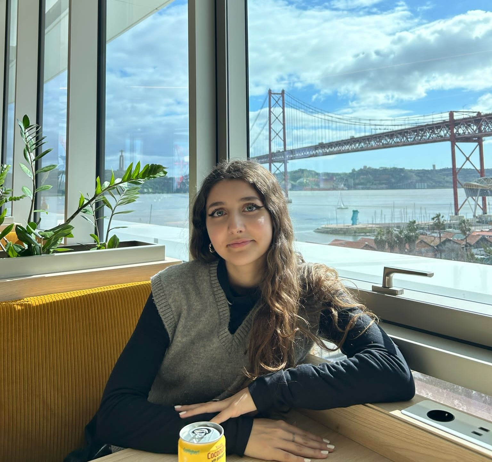

About Me

3rd-year Bachelor of Informatics Engineering student at the University of Coimbra.
Interested in software development and cybersecurity. Constantly seeking new challenges and opportunities, with a proactive approach to innovation and problem-solving.
Academic & Professional Experience
Technologies
View Technologies
Certifications
- DELF - Diplôme d'Études en Langue Française (B1)
Articles & Publications
Mention in Article:
- “With a little help from our (AI) friend: A general transition state sampling method for tropospheric hydrogen abstraction reactions” , by Researcher Luís P. Viegas. (Atmospheric Environment, 2024)
Skills
- Teamwork
- Languagues
- Portuguese (Native)
- English (Fluent)
- Spanish (Intermediate)
- French (Basic)
- German (Basic)